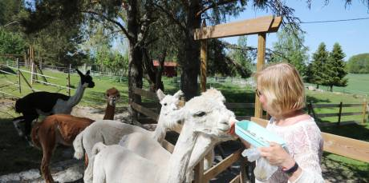
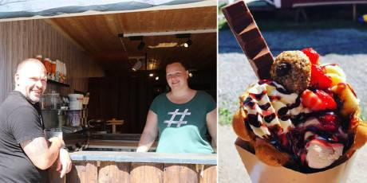
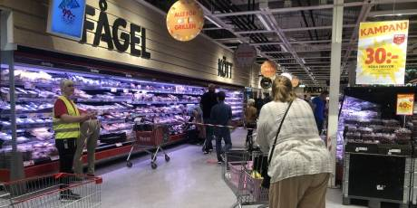
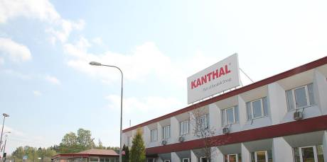

ABB vinner EU-upphandling värd 200 miljarder kronor
Västerås ★ MÅNDAG 22 JUNI: Bil i lågor • Vädret: Soligt och stackmoln God morgon Västerås! Vid tre-tiden fick räddningstjänsten larm om en bilbrand på Finnslätten. En personbil som stod på Effektgatan blev totalförstörd och händelsen rubriceras av polisen som...måndag 22/6 7:30
Kommentera
SMHI: Stor risk för skogsbrand
Västmanland Mycket stor antändningsrisk i skogsmark Helgens varma väder har gjort att det är mycket torrt ute i skog och mark. SMHI går därför ut med en varning om att det är stor risk för skogsbränder i Västmanland.söndag 21/6 16:29
Elsäkerheten viktig för att elbilen inte ska bli en brandfara
Västmanland Teknisk expert: "Vanliga eluttag bör bara användas som tillfällig lösning" Förra helgen inträffade en brand i en elbil i Sala. Men är elbilar farligare än bensinbilar?söndag 21/6 14:48

På besök hos Kolmstahöjdens Alpackor: "Har blivit familjemedlemmar"
Västmanland Stress, många krav och fullt upp, det är saker vi alla upplever i perioder. Så nu i sommar är det läge att ta ett djupt andetag och ladda batterierna med ny energi. Ett sätt att göra det är ett besök...söndag 21/6 9:17
Domstol ger klartecken till nya bostäder i Dingtuna
Västerås Mark- och miljööverdomstolen vid Svea hovrätt har i en dom gett kommunen rätt och fastställt en detaljplan som i en tidigare dom upphävdes av Mark- och miljödomstolen.lördag 20/6 16:41
Annons
Framtiden med röststyrda spel på onlinecasinon
Teknologin går framåt med hög fart – även inom världen av onlinecasinon. Casinon är ständigt på jakt efter nya tekniker och nu har man introducerat röststyrda onlinespel. I denna artikel tar vi en...onsdag 10/6 19:04
Ytterligare krisstödsnummer öppnas för att möta ökad oro
Bemannas av Svenska kyrkans präster och diakoner På uppdrag av Länsstyrelsens krissamordning har Svenska kyrkan Västerås stift samlat anställda från församlingarna i Västmanland för att kunna bemanna ett nytt journummer dit oroliga eller ensamma...onsdag 6/5 8:54
Kommunen öppnar stödlinje för äldre
Ska svara på frågor om coronaviruset Nu startar Västerås stad Äldrelinjen – en stödlinje för äldre och deras närstående som behöver prata med någon med anledning av corona-pandemin.tisdag 14/4 13:07
Hit kan du vända dig om du eller ditt barn är oroligt eller har frågor om covid-19
Du kan få råd och stöd från många olika organisationer direkt på nätet. Det kostar ingenting och du behöver inte berätta vem du är, om du inte vill. Här hittar du några stödlinjer, chattar och...tisdag 7/4 16:36
FLER NYHETER
Polisen växlar upp inför sommaren: Brottsligheten väntas öka
Västerås Brottsligheten fortsätter att minska i pandemins spår – än så länge Skadegörelsebrott, våldsbrott och tillgreppsbrott minskade rejält i maj månad om man jämför med föregående år. Nu laddar dock polisen för en ökning av brott när sommaren är här. – Vi har sett den...lördag 20/6 8:44

Dom serverar glassiga våfflor i lantlig miljö
Västerås Claes Hamberg och Lisa Holmberg, ägarna till Bygdens Bageri i Kärrbo, kommer även i år att förutom sitt ordinarie sortiment med mat- och fikabröd, servera fantastiska bubbelvåfflor fyllda med allt...fredag 19/6 18:14
Västeråskändisarnas bästa sommartips
Västmanland • "Vallby är fint" • "Fagerstatrakten" • "Frösåker är en idyll" • Vackra Ängsö Nu är sommaren här och på grund av coronaläget i världen kommer fler än någonsin att fira sin semester på hemmaplan. Västerås Tidning hörde därför av sig till ett antal av våra lokala kändisarna för...fredag 19/6 13:34
100-åriga Lilly besegrade coronan: "Nu kan jag andas"
Hälsa Äldreomsorgen får mycket kritik så här i coronatider. Men det finns berättelser där medarbetare som arbetar nära de insjuknade blivit mycket viktiga och även äldre personer har tillfrisknat efter en...fredag 19/6 8:08
Faunapassagen prisas: "Omsorgsfull gestaltning"
Västerås I juni 2019 invigdes faunapassagen vid Turbinbron i centrala Västerås där man kan få se fiskar vandra på sin väg upp för Svartån. Nu har bygget tilldelats 2020 års Arkitekturpris, ett pris som delas...torsdag 18/6 14:11

Trots de långa köerna i butikerna: "Kunderna har varit ute tidigare i år"
Västerås Har vidtagit flera åtgärder för att undvika kaos i butikerna Det är dagen före midsommar. Normalt sett är det här en av de dagar då flest kunder är ute i matbutikerna och handlar inför morgondagens festligheter. I år har uppmaningen varit att kunderna ska vara...torsdag 18/6 11:42
Mammans födelsedagsvädjan blev en succé – fick över tusen delningar
Västerås Sonen högsta önskan är att få "dricka öl och åka raggarbil" Max önskan på 19-årsdagen var att få åka raggarbil, lyssna på musik och dricka öl! Mamma Ulrika Gabriel tänkte att det vore roligt om han i alla fall kunde få åka en sväng med en raggarbil någon dag...torsdag 18/6 9:23
Morgonrapporten – det hände under natten
Västerås ★ TORSDAG 18 JUNI: Lugn natt • Vädret: Soligt God morgon Västerås! Det har varit en lugn natt i Västerås utan allvarligare händelser, rapporterar polisen. Följ Västerås Tidnings fortlöpande rapportering om händelseutvecklingen kring...torsdag 18/6 7:30
SPORT

Stortävlingen Västerås Open skjuts upp till 2021
Sport Västerås Golfklubb: ”Tråkigt men väntat besked” Regerande mästarinnan Annelie Sjöholm får vänta ett år på att försvara sin titel i Anna Nordqvist Västerås Open. Nu har beskedet kommit att stortävlingen skjuts ett år på framtiden på grund av det...onsdag 17/6 15:43

Askebrand hyllar fansen inför premiären: "Det är magiskt"
Sport Tränaren inför kvällens premiär: "Bara att släppa loss gubbarna" Det är bara timmar kvar till VSK fotbolls minst sagt efterlängtade premiär i Superettan. Och det är ett laddat gäng grönvita spelare som står redo för att ge grannarna från Eskilstuna en rejäl fajt....tisdag 16/6 16:34

Hela listan: Här är klubbarna som får coronastöd
Sport Över 8 miljoner kronor till Västerås idrottsföreningar Under måndagen började det så kallade kompensationsstödet till idrottsföreningar som har drabbats ekonomiskt av coronapandemin att betalas ut. Västmanland tar del av fem procent, totalt 9 293 000...tisdag 16/6 8:50
FLER NYHETER
Internationell liga bakom bankomatstöld i Västerås
Västerås • Första i Sverige • Leddes från Ryssland • Två män dömda I slutet på januari i år flyger två män från Ryssland till Sverige för att utföra black box-attacker mot bankomater. Fem dagar senare grips de i Västerås och nu har de dömts för ett fall av grovt...onsdag 17/6 19:58
UD tillåter utlandsresor i sommar
Hälsa Öppnar för resor till 10 länder – men förlänger stoppet till länder utanför EU Under onsdagen kallade utrikesminister Ann Linde till en pressträff. Där presenterade hon nya restriktioner vad gäller utlandsresor för svenskarna i sommar.onsdag 17/6 16:07
Klart: Nya utebadet öppnas inte i sommar
Västerås Coronapandemin sätter stopp: "Vi har inte förutsättningarna" Västerås stad har tillsammans med Medley, som driver Lögarängsbadet, kommit fram till att det inte går att öppna utebadet i anslutning till Lögarängsbadet i sommar som det var tänkt.onsdag 17/6 14:31
Nu kan man gifta sig på Djäkneberget
Västerås Kyrkan öppnar även för dop i "märkligt" dopkapell Drop-in-dop och vigsel är en möjlighet som årligen erbjuds flera gånger i Västerås kyrkor. Den 26 juni flyttar den möjligheten för första gången till Djäkneberget för par som vill vigas. Samtidigt...onsdag 17/6 13:00
Efter debatten – nu säljer Mimer Klippanhusen
Västerås "Bättre att satsa resurserna någon annanstans" Mimers styrelse har beslutat att sälja fastigheten Kraka 4, som tidigare innefattande nattklubben Klippan och Klipper Hotel, till Aroseken. Fastighetsförsäljningen kommer slutgiltigt att godkännas av...onsdag 17/6 10:08
Morgonrapporten – det hände under natten
Västerås ★ ONSDAG 17 JUNI: Bilar förstörda i brand • Vädret: Molnigt och lokal åska God morgon Västerås! Klockan 03.42 larmades räddningstjänsten till Plåtverksgatan på Bäckby där det börjat brinna i två personbilar. Polisen rubricerar händelsen som skadegörelse. Följ Västerås...onsdag 17/6 7:30
Ny lokal grafik: Trycket minskar på IVA – bara en ny patient senaste veckan
Hälsa Så ser coronaläget ut i länet jämfört med övriga landet Nyhetsbyrån Newsworthy har även den här veckan sammanställt en regional rapport om coronaviruset i Sverige baserat på statistik från Folkhälsomyndigheten, Svenska Intensivvårdsregistret och regioners...tisdag 16/6 19:22
Populära leklandet öppnar igen – efter coronakarantänen
Västerås Inför bokningssystem för att reducera gäster Leos Lekland är en av många verksamheter som varit tvungna att stänga igen under vårens corona-pandemi. Nu planeras och förbereds det dock för en nyöppning och verksamheten anpassas nu för...tisdag 16/6 15:57

Sandvik varslar i Hallsta och Sura
Hallsta/Sura 80 anställda berörs: "Vi måste agera i tid" På tisdagen meddelade Sandvik att de varslar 429 anställda om uppsägning inom affärsområdet Sandvik Materials Technology. 80 personer i Hallstahammar och Surahammar berörs.tisdag 16/6 10:55

Morgonrapporten – det hände under natten
Västerås ★ TISDAG 16 JUNI: Rånvåg i natt • Vädret: Kraftiga skurar och åska God morgon Västerås! Under natten har två rån inträffat i Västerås. Polisen fick första larmet vid 1-tiden då en väktare tryckte på larmet efter att en gärningsman klivit fram och velat ha både ha...tisdag 16/6 7:30
Annons
Framtiden med röststyrda spel på onlinecasinon
Teknologin går framåt med hög fart – även inom världen av onlinecasinon. Casinon är ständigt på jakt efter nya tekniker och nu har man introducerat röststyrda onlinespel. I denna artikel tar vi en...onsdag 10/6 19:04
Om kommentarer på denna sajt
Hej! Vad tycker du om det du just läst? Bidra gärna med tankar och synpunkter men tänk på att det bästa sättet att hitta läsare är att hålla sig kort och koncis, med en god ton. Glöm inte att dela alla artiklar du kommenterat – för ännu mer debatt! Här kan du läsa mer om vilka regler som gäller i våra kommentarsfält.
Comments powered by Disqus.